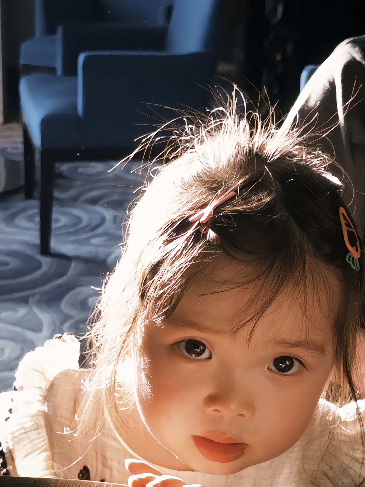

你好，我是曾婉之
我是一个充满好奇心和活力的小朋友，每一天都在探索这个精彩纷呈的世界。无论是在生活中，还是在学习中，我都带着满满的热情和笑容。
基本信息
- 姓名：曾婉之
- 生日：2021年5月5日
- 爱好：画画、吃咩猫、去万达广场
- 最喜欢的颜色：粉色甚至想把小狗染成粉色
我的特长
- 绘画：能画出各种可爱的小动物和风景
- 舞蹈：拥有自然的节奏感和表现力
- 讲故事：有丰富的想象力和表达能力
- 乐器：正在学习弹钢琴，进步神速
我的小秘密
- 爱心：特别喜欢帮助别人，经常分享自己的玩具
- 收藏：爱收集各种漂亮的贴纸和小饰品
- 梦想：成为一名能帮助别人的医生
- 最爱：最喜欢的动画片是《冰雪奇缘》
我的成长足迹
现在
快乐成长
每天都在爱的环境中健康成长，充满好奇心和创造力。
2024年
新的探索
不断尝试新事物，对世界充满了更多好奇。
2023年
语言进步
词汇量大幅增长，能够流利表达自己的想法和感受。
2022年
兴趣发展
开始学习舞蹈和绘画，展现出艺术天赋。
2021年
呱呱坠地
我带着幸福与欢笑来到这个世界，成为家人的开心果。